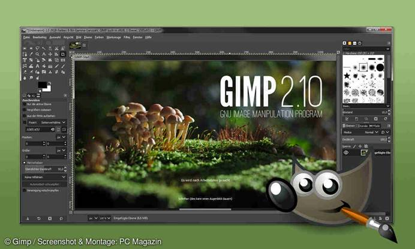
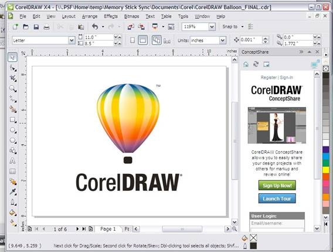
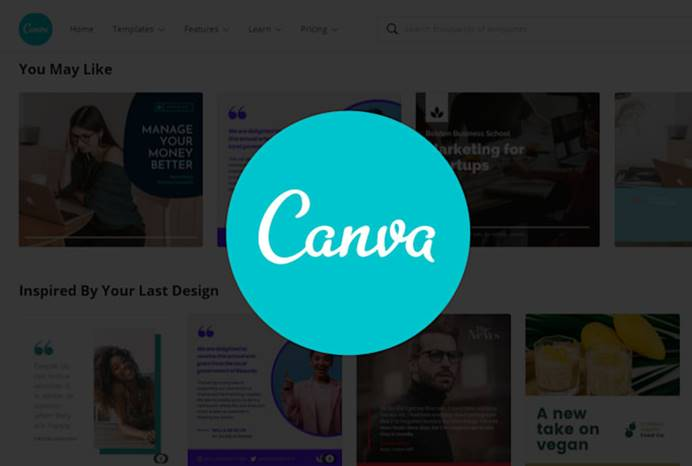
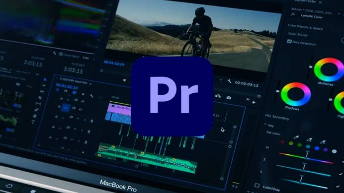
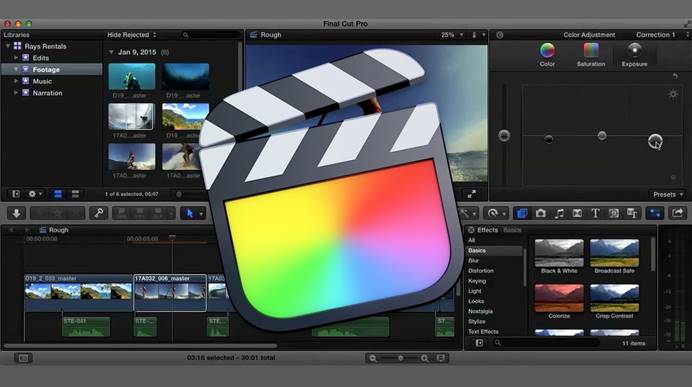
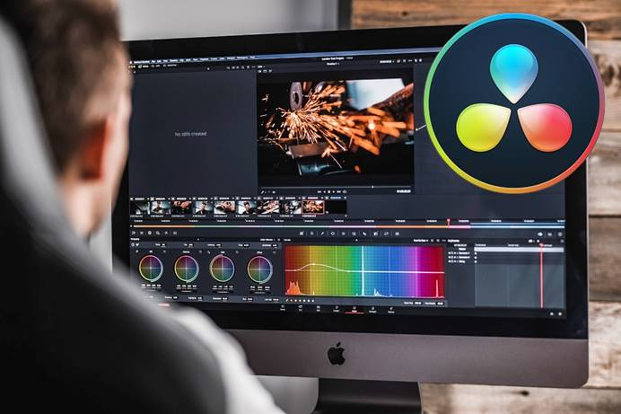

الأدوات البرمجية للوسائط المتعددة
- تحرير الصور والفيديو
- الصوت والمؤثرات
- 3D والأنيميشن
🎬 الأدوات البرمجية - استعراض سريع
🖼️ برمجيات الصورة
أصبحت برامج تحرير الصور جزءاً أساسياً من عملية التصوير. والهدف الأساسي لبرامج تحرير الصور هو تحسين التفاصيل والوضوح وتوازن الألوان في الصورة. تتضمن هذه العملية مجموعة متنوعة من التقنيات، مثل ضبط السطوع والتبايُن، وإزالة الضوضاء، وتوضيح الحواف.
هناك العديد من البرامج لتحرير الصور وتصميم الجرافيك، تُستخدم لتعديل الصور، تصحيح الألوان، وإضافة مؤثرات بصرية متقدمة.
1. GIMP (GNU Image Manipulation Program)
برنامج مفتوح المصدر لتحرير الصور مشابه للفوتوشوب، يتيح تعديل الصور وإنشاء التصميمات بشكل مجاني.
2. Adobe Lightroom
برنامج مخصص لتحرير وتنظيم الصور الفوتوغرافية بواجهة سهلة الاستخدام، مثالي لمعالجة الصور وتحسينها بسرعة.

3. CorelDRAW
برنامج تصميم رسومات متجانية واستخدام واسع في تصميم الشعارات والرسومات الفنية.
4. Canva
منصة تصميم عبر الإنترنت سهلة الاستخدام تتيح إنشاء تصاميم صور، بوسترات، وعروض تقديمية بسرعة ودون الحاجة لمهارات احترافية.
🎞️ برمجيات الفيديو
هي برامج تُستخدم لتحرير، معالجة، تعديل، وتحويل مقاطع الفيديو. تساعد هذه البرامج المستخدمين في قص الفيديو، إضافة مؤثرات بصرية، تعديل الصوت، دمج المقاطع، وصناعة أفلام أو مقاطع فيديو احترافية أو بسيطة.
1. Adobe Premiere Pro
برنامج تحرير فيديو احترافي يستخدم في صناعة الأفلام، الإعلانات، والفيديوهات عالية الجودة مع دعم كبير لخيارات التحرير والتأثيرات.
2. Final Cut Pro
برنامج تحرير فيديو عالي الأداء مقدم من Apple، مُستخدم على أنظمة Mac لتحرير الفيديو بجودة عالية وواجهة سهلة الاستخدام.
3. DaVinci Resolve
يجمع بين تحرير الفيديو وتصحيح الألوان بشكل احترافي، ويُستخدم بكثرة في صناعات الأفلام والتلفزيون.
